Chapter 5: Book V. Theory of Proportion¶
5.1 Book V. Theory of Proportion¶
________________
DEFINITIONS.
Introduction.—Every proposition in the theories of ratio and proportion is true for all descriptions of magnitude. Hence it follows that the proper treatment is the Algebraic. It is, at all events, the easiest and the most satisfactory. Euclid’s proofs of the propositions, in the Theory of Proportion, possess at present none but a historical interest, as no student reads them now. But although his demonstrations are abandoned, his propositions are quoted by every writer, and his nomenclature is universally adopted. For these reasons it appears to us that the best method is to state Euclid’s definitions, explain them, or prove them when necessary, for some are theorems under the guise of definitions, and then supply simple algebraic proofs of his propositions.
i. A less magnitude is said to be a part or submultiple of a greater magnitude, when the less measures the greater—that is, when the less is contained a certain number of times exactly in the greater.
ii. A greater magnitude is said to be a multiple of a less when the greater is measured by the less—that is, when the greater contains the less a certain number of times exactly.
iii. Ratio is the mutual relation of two magnitudes of the same kind with respect to quantity.
iv. Magnitudes are said to have a ratio to one another when the less can be multiplied so as to exceed the greater.
These definitions require explanation, especially Def. iii., which has the fault of conveying no precise meaning—being, in fact, unintelligible.
The following annotations will make them explicit:—
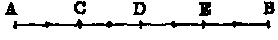
1. If an integer be divided into any number of equal parts, one, or the sum of any number of these parts, is called a fraction. Thus, if the line AB represent the integer, and if it be divided into four equal parts in the points C, D, E, then AC is ; AD, ; AE, . Thus, a fraction is denoted by two numbers parted by a horizontal line; the lower, called the denominator, denotes the number of equal parts into which the integer is divided; and the upper, called the numerator, denotes the number of these equal parts which are taken. Hence it follows, that if the numerator be less than the denominator, the fraction is less than unity. If the numerator be equal to the denominator, the fraction is equal to unity; and if greater than the denominator, it is greater than unity. It is evident that a fraction is an abstract quantity—that is, that its value is independent of the nature of the integer which is divided.
2. If we divide each of the equal parts AC, CD, DE, EB into two equal parts, the whole, AB, will be divided into eight equal parts; and we see that AC = ; AD = ; AE = ; AB = ; Now, we saw in 1, that AE = of the integer, and we have just shown that it is equal to . Hence = ; but would be got from by multiplying its terms (numerator and denominator) by 2. Hence we infer generally that multiplying the terms of any fraction by 2 does not alter its value. In like manner it may be shown that multiplying the terms of a fraction by any whole number does not alter its value. Hence it follows conversely, that dividing the terms of a fraction by a whole number does not alter the value. Hence we have the following important and fundamental theorem:—Two transformations can be made on any fraction without changing its value; namely, its terms can be either multiplied or divided by any whole number, and in either case the value of the new fraction is equal to the value of the original one.
3. If we take any number, such as 3, and multiply it by any whole number, the product is called a multiple of 3. Thus 6, 9, 12, 15, &c., are multiples of 3; but 10, 13, 17, &c., are not, because the multiplication of 3 by any whole number will not produce them. Conversely, 3 is a submultiple, or measure, or part of 6, 9, 12, 15, &c., because it is contained in each of these without a remainder; but not of 10, 13, 17, &c., because in each case it leaves a remainder.
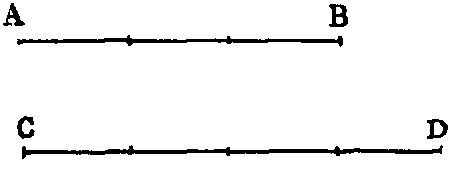
4. If we consider two magnitudes of the same kind, such as two lines AB, CD, and if we suppose that AB is equal to of CD, it is evident, if AB be divided into 3 equal parts, and CD into 4 equal parts, that one of the parts into which AB is divided is equal to one of the parts into which CD is divided. And as there are 3 parts in AB, and 4 in CD, we express this relation by saying that AB has to CD the ratio of 3 to 4; and we denote it thus, 3 : 4. Hence the ratio 3 : 4 expresses the same idea as the fraction . In fact, both are different ways of expressing and writing the same thing. When written 3 : 4 it is called a ratio, and when a fraction. In the same manner it can be shown that every ratio whose terms are commensurable can be converted into a fraction; and, conversely, every fraction can be turned into a ratio.
From this explanation we see that the ratio of any two commensurable magnitudes is the same as the ratio of the numerical quantities which denote these magnitudes. Thus, the ratio of two commensurable lines is the ratio of the numbers which express their lengths, measured with the same unit. And this may be extended to the case where the lines are incommensurable. Thus, if a be the side and b the diagonal of a square, the ratio of a : b is
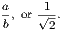
When two quantities are incommensurable, such as the diagonal and the side of a square, although their ratio is not equal to that of any two commensurable numbers, yet a series of pairs of fractions can be found whose difference is continually diminishing, and which ultimately becomes indefinitely small; such that the ratio of the incommensurable quantities is greater than one, and less than the other fraction of each pair. These fractions are called convergents. By their means we can approximate as nearly as we please to the exact value of the ratio. In the case of the diagonal and the side of a square, the following are the pairs of convergents:—
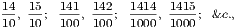
and the ratio is intermediate to each pair. It is evident we may continue the series as far as we please. Now if we denote the first of any of the foregoing pairs of fractions by
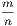
, the second will be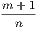
; and in general, in the case of two incommensurable quantities, two fractions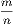
and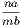
is greater than unity, and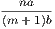
less than unity. Hence lies between and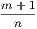
. Now, since the difference between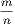
and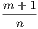
namely,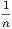
becomes small as n increases, we see that the difference between the ratio of two incommensurable quantities and that of two commensurable numbers m and n can be made as small as we please. Hence, ultimately, the ratio of incommensurable quantities may be regarded as the limit of the ratio of commensurable quantities.5. The two terms of a ratio are called the antecedent and the consequent. These correspond to the numerator and the denominator of a fraction. Hence we have the following definition:—“A ratio is the fraction got by making the antecedent the numerator and the consequent the denominator.”
6. The reciprocal of a ratio is the ratio obtained by interchanging the antecedent and the consequent. Thus, 4 : 3 is the reciprocal of the ratio 3 : 4. Hence we have the following theorem:—“The product of a ratio and its reciprocal is unity.”
7. If we multiply any two numbers, as 5 and 7, by any number such as 4, the products 20, 28 are called equimultiples of 5 and 7. In like manner, 10 and 15 are equimultiples of 2 and 3, and 18 and 30 of 3 and 5, &c.
v. The first of four magnitudes has to the second the same ratio which the third has to the fourth, when any equimultiples whatsoever of the first and third being taken, and any equimultiples whatsoever of the second and fourth, if, according as the multiple of the first is greater than, equal to, or less than the multiple of the second, the multiple of the third is greater than, equal to, or less than the multiple of the fourth.
vi. Magnitudes which have the same ratio are called proportionals. When four magnitudes are proportionals, it is usually expressed by saying, “The first is to the second as the third is to the fourth.”
viii. Analogy or proportion is the similitude of ratios.
We have given the foregoing definitions in the order of Euclid, as given by Simson, Lardner, and others;2 2Except that viii. is put before vii., because it relates, as v. and vi., to the equality of ratios, whereas vii. is a test of their inequality. but it is evidently an inverted order; for vi. viii. are definitions of proportion, and v. is only a test of proportion, and is not a definition but a theorem, and one which, instead of being taken for granted, requires proof. The following explanations will give the student clear conceptions of their meaning:—
1. If we take two ratios, such as 6 : 9 and 10 : 15, which are each equal to the same thing (in this example each is equal to ), they are equal to one another (I. Axiom i.). Then we may write it thus—
This would be the most intelligible way, but it is not the usual one, which is as follows:—6 : 9 :: 10 : 15. In this form it is called a proportion. Hence a proportion consists of two ratios which are asserted by it to be equal. Its four terms consist of two antecedents and two consequents. The 1st and 3rd terms are the antecedents, and the 2nd and 4th the consequents. Also the first and last terms are called the extremes, and the two middle terms the means.
2. Since a proportion consists of two equal ratios, and each ratio can be written as a fraction, whenever we have a proportion such as
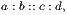
we can write it in the form of two equal fractions. Thus:
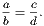
Conversely, an equation between two fractions can be put into a proportion. By means of these simple principles all the various properties of proportion can be proved in the most direct and easy manner.
3. If we take the proportion a : b :: c : d, and multiply the first and third terms, each by m, and second and fourth, each by n, we get the four multiples, ma, nb, mc, nd; and we want to prove that if ma is greater than nb, mc is greater than nd; if equal, equal; and if less, less.
Dem.—Since a : b :: c : d,
we have = .
Hence, multiplying each by
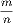
we get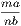
=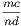
.Now, it is evident that if
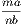
is greater than unity,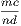
is greater than unity; but if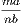
is greater than unity, ma is greater than nb; and if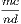
is greater than unity, mc is greater than nd. In like manner, if ma be equal to nb, mc is equal to nd; and if less, less.The foregoing is an easy proof of the converse of the theorem which is contained in Euclid’s celebrated Fifth Definition.
Next, to prove Euclid’s theorem—that if, according as the multiple of the first of four magnitudes is greater than, equal to, or less than the multiple of the second, the multiple of the third is greater than, equal to, or less than the multiple of the fourth; the ratio of the first to the second is equal to the ratio of the third to the fourth.
Dem.—Let, a, b, c, d be the four magnitudes. First suppose that a and b are commensurable, then it is evident that we can take multiples na, mb, such that na = mb. Hence, by hypothesis, nc = md. Thus,
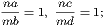
| therefore | |||||||||||
|---|---|---|---|---|---|---|---|---|---|---|---|
Next, suppose a and b are incommensurable. Then, as in a recent note, we can find two numbers m and n, such that
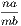
is greater than unity, but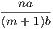
less than unity. Hence lies between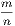
and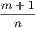
. Now, since by hypothesis, when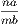
is greater than unity,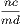
is greater than unity; and when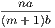
is less than unity,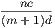
is less than unity. Hence, since lies between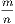
and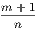
, lies between the same quantities. Therefore the difference between and is less than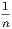
; and since n may be as large as we please, the difference is nothing; therefore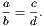
vii. When of the multiples of four magnitudes (taken as in Def. v.) the multiple of the first is greater than that of the second, but the multiple of the third not greater than that of the fourth, the first has to the second a greater ratio than the third has to the fourth.
This, instead of being a definition, is a theorem. We have altered the last clause from that given in Simson’s Euclid, which runs thus:—“The first is said to have to the second a greater ratio than the third has to the fourth.” This is misleading, as it implies that it is, by convention, that the first ratio is greater than the second, whereas, in fact, such is not the case; for it follows from the hypothesis that the first ratio is greater than the second; and if it did not, it could not be made so by definition. We have made a similar change in the enunciation of the Fifth Definition.
Let a, b, c, d be the four magnitudes, and m and n the multiples taken, it is required to prove, that if ma be greater than nb, but mc not greater than nd, that the ratio a : b is greater than the ratio c : d.
Dem.—Since ma is greater than nb, but mc not greater than nd, it is evident that
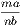 |
is greater than 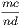 ; |
||||||||||
|---|---|---|---|---|---|---|---|---|---|---|---|
| therefore | is greater than ; |
that is, the ratio a : b is greater than the ratio c : d.
ix. Proportion consists of three terms at least.
This has the same fault as some of the others—it is not a definition, but an inference. It occurs when the means in a proportion are equal, so that, in fact, there are four terms. As an illustration, let us take the numbers 4, 6, 9. Here the ratio of 4 : 6 is
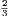
, and the ratio of 6 : 9 is , so that 4, 6, 9 are continued proportionals; but, in reality, there are four terms, for the full proportion is 4 : 6 :: 6 : 9.x. When three magnitudes are continual proportionals, the first is said to have to the third the duplicate ratio of that which it has to the second.
xi. When four magnitudes are continual proportionals, the first is said to have to the fourth the triplicate ratio of that which it has to the second.
xii. When there is any number of magnitudes of the same kind greater than two, the first is said to have to the last the ratio compounded of the ratios of the first to the second, of the second to the third, of the third to the fourth, &c.
We have placed these definitions in a group; but their order is inverted, and, as we shall see, Def. xii. is a theorem, and x. and xi. are only inferences from it.
1. If we have two ratios, such as 5 : 7 and 3 : 4, and if we convert each ratio into a fraction, and multiply these fractions together, we get a result which is called the ratio compounded of the two ratios; viz. in this example it is
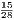
, or 15 : 28. It is evident we get the same result if we multiply the two antecedents together for a new antecedent, and the two consequents for a new consequent. Hence we have the following definition:—“The ratio compounded of any number of ratios it the ratio of the product of all the antecedents to the product of all the consequents.”2. To prove the theorem contained in Def. xii.
Let the magnitudes be a, b, c, d. Then the ratio of
| 1st : 2nd | = , | ||
|---|---|---|---|
| 2nd : 3rd | = , | ||
| 3rd : 4th | = |
Hence the ratio compounded of the ratio of 1st : 2nd, of 2nd : 3rd, of 3rd : 4th
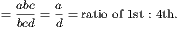
3. If three magnitudes be proportional, the ratio of the 1st : 3rd is equal to the square of the ratio of the 1st : 2nd. For the ratio of the 1st : 3rd is compounded of the ratio of the 1st : 2nd, and of the ratio of the 2nd : 3rd; and since these ratios are equal, the ratio compounded of them will be equal to the square of one of them.
Or thus: Let the proportionals be a, b, c, that is, let a : b :: b : c; hence we have
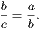
And multiplying each by , we get
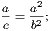
or a : c :: a2 : b2—that is, 1st : 3rd :: square of 1st : square of 2nd. Now, the ratio of 1st : 3rd is, by Def. x., the duplicate ratio of 1st : 2nd. Hence the duplicate ratio of two magnitudes means the square of their ratio, or, what is the same thing, the ratio of their squares (see Book VI. xx.).
4. If four magnitudes be continual proportionals, the ratio of 1st : 4th is equal to the cube of the ratio of 1st : 2nd. This may be proved exactly like 3. Hence we see that what Euclid calls triplicate ratio of two magnitudes is the ratio of their cubes, or the cube of their ratio.
We also see that there is no necessity to introduce extraneous magnitudes for the purpose of defining duplicate and triplicate ratios, as Euclid does. In fact, the definitions by squares and cubes are more explicit.
xiii. In proportionals, the antecedent terms are called homologous to one another; as also the consequents to one another.
If one proportion be given, from it an indefinite number of other proportions can be inferred, and a great part of the theory of proportion consists in proving the truth of these derived proportions. Geometers make use of certain technical terms to denote the most important of these processes. We shall indicate these terms by including them in parentheses in connexion with the Propositions to which they refer. They are useful as indicating, by one word, the whole enunciation of a theorem.
Every Proposition in the Fifth Book is a Theorem.
PROP. I.—Theorem.
If any number of magnitudes of the same kind (a, b, c, &c.), be equimultiples of as many others (a′, b′, c′, &c.), then the sum of the first magnitudes (a + b + c, &c.) shall be the same multiple of the sum of the second which any magnitude of the first system is of the corresponding magnitude of the second system.
Dem.—Let m denote the multiple which the magnitudes of the first system are of those of the second system.
| Then we have | a = ma′ (hyp.), | ||||||||||
|---|---|---|---|---|---|---|---|---|---|---|---|
| b = mb′, | |||||||||||
| c = mc′. | |||||||||||
| &c., &c. |
Hence, by addition,
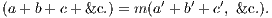
PROP. II.—Theorem.
If two magnitudes of the same kind (a, b) be the same multiples of another (c) which two corresponding magnitudes (a′, b′) are of another (c′), then the sum of the two first is the same multiple of their submultiple which the sum of their corresponding magnitudes is of their submultiple.
Dem.—Let m and n be the multiples which a and b are of c.
Then we have
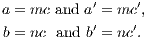
Therefore
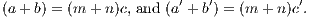
Hence a + b is the same multiple of c that a′ + b′ is of c′.
This Proposition is evidently true for any number of multiples.
PROP. III.—Theorem.
If two magnitudes (a, b) be equimultiples of two others (a′, b′); then any equimultiples of the first magnitudes (a, b) will be also equimultiples of the second magnitudes (a′, b′).
Dem.—Let m denote the multiples which a, b are of a′, b′; then we have
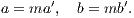
Hence, multiplying each equation by n, we get
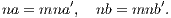
Hence, na, nb are equimultiples of a′, b′.
PROP. IV.—Theorem.
If four magnitudes be proportional, and if any equimultiples of the first and third be taken, and any other equimultiples of the second and fourth; then the multiple of the first : the multiple of the second :: the multiple of the third : the multiple of the fourth.
Let a : b :: c : d; then ma : nb :: mc : nd.
Dem.—We have a : b :: c : d (hyp.);
therefore
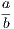
=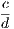
.Hence, multiplying each fraction by
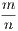
, we get= ;
therefore ma : nb :: mc : nd.
PROP. V.—Theorem.
If two magnitudes of the same kind (a, b) be the same multiples of another (c) which two corresponding magnitudes (a′, b′) are of another (c′), then the difference of the two first is the same multiple of their submultiple (c), which the difference of their corresponding magnitudes is of their submultiple (c′) (compare Proposition ii.).
Dem.—Let m and n be the multiples which a and b are of c.
| Then we have | a = mc, and a′ = mc′, | ||||||||||
|---|---|---|---|---|---|---|---|---|---|---|---|
| b = nc, and b′ = nc′. |
Therefore (a−b) = (m−n)c, and (a′−b′) = (m−n)c′. Hence a−b is the same multiple of c that a′− b′ is of c′.
Cor.—If a − b = c, a′− b′ = c′; for if a − b = c, m − n = 1.
PROP. VI.—Theorem.
If a magnitude (a) be the same multiple of another (b), which a magnitude (a′) taken from the first is of a magnitude (b′) taken from the second, the remainder is the same multiple of the remainder that the whole is of the whole (compare Proposition i.).
Dem.—Let m denote the multiples which the magnitudes a, a′ are of b, b′; then we have
| a | = mb, | ||||||||||
|---|---|---|---|---|---|---|---|---|---|---|---|
| a′ | = mb′. | ||||||||||
| Hence | (a − a′) | = m(b − b′). |
Prop. A.—Theorem (Simson).
If two ratios be equal, then according as the antecedent of the first ratio is greater than, equal to, or less than its consequent, the antecedent of the second ratio is greater than, equal to, or less than its consequent.
Dem.—Let a : b :: c : d;
then = ;
and if a be greater than b, is greater than unity; therefore is greater than unity, and c is greater than d.
In like manner, if a be equal to b, c is equal to d, and if less, less.
Prop. B.—Theorem (Simson).
If two ratios are equal their reciprocals are equal (invertendo).
Let a : b :: c : d, then b : a :: d : c.
| Dem.—Since | a : b | :: c : d; | |||||||||
|---|---|---|---|---|---|---|---|---|---|---|---|
| then | = ; | ||||||||||
| therefore | 1 ÷ | = 1 ÷, | |||||||||
| or | = | ||||||||||
| Hence | b : a | :: d : c. |
Prop. C.—Theorem (Simson).
If the first of four magnitudes be the same multiple of the second which the third is of the fourth, the first is to the second as the third is to the fourth.
Let a = mb, c = md; then a : b :: c : d.
Dem.—Since a = mb, we have = m.
In like manner, = m; therefore = .
| Hence | a : b :: c : d. | ||||||||||
|---|---|---|---|---|---|---|---|---|---|---|---|
Prop. D.—Theorem (Simson).
If the first be to the second as to the third is to the fourth, and if the first be a multiple or submultiple of the second, the third is the same multiple or submultiple of the fourth.
1. Let a : b :: c : d, and let a be a multiple of b, then c is the same multiple of d.
Dem.—Let a = mb, then = m;
but = ; therefore = m, and c = md.
2. Let a = , then = ;
| therefore | = , | ||||||||||
|---|---|---|---|---|---|---|---|---|---|---|---|
| Hence | c | = . |
PROP. VII.—Theorem.
1. Equal magnitudes have equal ratios to the same magnitude.
2. The same magnitude has equal ratios to equal magnitudes.
Let a and b be equal magnitudes, and c any other magnitude.
| Then 1. | a : c | :: b : c, | |||||||||
|---|---|---|---|---|---|---|---|---|---|---|---|
| 2. | c : a | :: c : b. |
Dem.—Since a = b, dividing each by c, we have
therefore a : c :: b : c.
Again, since a = b, dividing c by each, we have
therefore c : a :: c : b.
Observation.—2 follows at once from 1 by Proposition B.
PROP. VIII.—Theorem.
1. Of two unequal magnitudes, the greater has a greater ratio to any third magnitude than the less has; 2. any third magnitude has a greater ratio to the less of two unequal magnitudes than it has to the greater.
1. Let a be greater than b, and let c be any other magnitude of the same kind, then the ratio a : c is greater than the ratio b : c.
Dem.—Since a is greater than b, dividing each by c,
therefore the ratio a : c is greater than the ratio b : c.
2. To prove that the ratio c : b is greater than the ratio c : a.
Dem.—Since b is less than a, the quotient which is the result of dividing any magnitude by b is greater than the quotient which is got by dividing the same magnitude by a;
| therefore | is greater than . | |||||||||
|---|---|---|---|---|---|---|---|---|---|---|
Hence the ratio c : b is greater than the ratio c : a.
PROP. IX.—Theorem.
Magnitudes which have equal ratios to the same magnitude are equal to one another; 2. magnitudes to which the same magnitude has equal ratios are equal to one another.
1. If a : c :: b : c, to prove a = b.
| Dem.—Since | a : c | :: b : c, | |||||||||
|---|---|---|---|---|---|---|---|---|---|---|---|
| = . |
Hence, multiplying each by c, we get a = b.
2. If c : a :: c : b, to prove a = b.
| Dem.—Since | c : a | :: c : b, | |||||||||
|---|---|---|---|---|---|---|---|---|---|---|---|
| by inversion, | a : c | :: b : c; | |||||||||
| therefore | a | = b. [1]. |
PROP. X.—Theorem.
Of two unequal magnitudes, that which has the greater ratio to any third is the greater of the two; and that to which any third has the greater ratio is the less of the two.
1. If the ratio a : c be greater than the ratio b : c, to prove a greater than b.
Dem.—Since the ratio a : c is greater than the ratio b : c,
Hence, multiplying each by c, we get a greater than b.
2. If the ratio c : b is greater than the ratio c : a, to prove b is less than a.
Dem.—Since the ratio c : b is greater than the ratio c : a,
| Hence | 1 ÷ | is less than 1 ÷, | |||||||||
|---|---|---|---|---|---|---|---|---|---|---|---|
| that is, | is less than . |
Hence, multiplying each by c, we get
PROP. XI.—Theorem.
Ratios that are equal to the same ratio are equal to one another.
Let a : b :: e : f, and c : d :: e : f, to prove a : b :: c : d.
Dem.—Since a : b :: e : f,
| = . | |||||||||||
|---|---|---|---|---|---|---|---|---|---|---|---|
| In like manner, | = . | ||||||||||
| Hence | = |
||||||||||
| and | a : | b :: c : d. |
PROP. XII.—Theorem.
If any number of ratios be equal to one another, any one of these equal ratios is equal to the ratio of the sum of all the antecedents to the sum of all the consequents.
Let the ratios a : b, c : d, e : f, be all equal to one another; it is required to prove that any of these ratios is equal to the ratio a + c + e : b + d + f.
Dem.—By hypotheses,
Since these fractions are all equal, let their common value be r; then we have
| = r, | = r, = r; | ||||||||||
|---|---|---|---|---|---|---|---|---|---|---|---|
| therefore | a | = br, | |||||||||
| c | = dr, | ||||||||||
| e | = fr; | ||||||||||
| therefore | a + c + e | = (b + d + f)r. |
| Hence | = r; | ||||||||||
|---|---|---|---|---|---|---|---|---|---|---|---|
| therefore | = , | ||||||||||
| and | a : b :: | a + c + e : b + d + f. |
Cor.—With the same hypotheses, if l, m, n be any three multipliers, a : b :: la + mc + ne : lb + md + nf.
PROP. XIII.—Theorem.
If two ratios are equal, and if one of them be greater than any third ratio, then the other is also greater than that third ratio.
If a : b :: c : d, but the ratio of c : d greater than the ratio of e : f; then the ratio of a : b is greater than the ratio of e : f.
Dem.—Since the ratio of c : d is greater than the ratio of e : f,
| Again, since | a | : b :: c : d, | |||||||||
|---|---|---|---|---|---|---|---|---|---|---|---|
| therefore | is greater than . | ||||||||||
|---|---|---|---|---|---|---|---|---|---|---|---|
or the ratio of a : b is greater than the ratio of e : f.
PROP. XIV.—Theorem.
If two ratios be equal, then, according as the antecedent of the first ratio is greater than, equal to, or less than the antecedent of the second, the consequent of the first is greater than, equal to, or less than the consequent of the second.
Let a : b :: c : d; then if a be greater than c, b is greater than d; if equal, equal; if less, less.
| Dem.—Since | a : b | :: c : d. | |||||||||
|---|---|---|---|---|---|---|---|---|---|---|---|
| we have | = , |
and multiplying each by we get
| × = | |||||||||||
|---|---|---|---|---|---|---|---|---|---|---|---|
| or | = | ; | |||||||||
| therefore | a : c :: | b : d. |
Hence, Proposition [A], if a be greater than c, b is greater than d; if equal, equal; and if less, less.
PROP. XV.—Theorem.
Magnitudes have the same ratio which all equimultiples of them have.
Let a, b be two magnitudes, then the ratio a : b is equal to the ratio ma : mb.
Dem.—The ratio a : b =  , and the ratio of ma : mb = ; but since the value of a fraction is not altered by multiplying its numerator and denominator by the same number,
, and the ratio of ma : mb = ; but since the value of a fraction is not altered by multiplying its numerator and denominator by the same number,
| = ; | |||||||||||
|---|---|---|---|---|---|---|---|---|---|---|---|
| therefore | a : b | :: ma : mb. |
PROP. XVI—Theorem.
If four magnitudes of the same kind be proportionals they are also proportionals by alternation (alternando).
Let a : b :: c : d, then a : c :: b : d.
Dem.—Since a : b :: c : d,
and multiplying each by , we get
| = ., | |||||||||||
|---|---|---|---|---|---|---|---|---|---|---|---|
| or | = ; | ||||||||||
| therefore | a : c | :: b : d. |
PROP. XVII.—Theorem.
If four magnitudes be proportional, the difference between the first and second : the second :: the difference between the third and fourth : the fourth (dividendo).
Let a : b :: c : d : then a − b : b :: c − d : d;
| Dem.—Since | a : b | :: c : d, | |||||||||
|---|---|---|---|---|---|---|---|---|---|---|---|
| = ; | |||||||||||
| therefore | − 1 | = − 1, | |||||||||
| or | = ; | ||||||||||
| therefore | a − b : b | :: c − d : d. |
PROP. XVIII.—Theorem.
If four magnitudes be proportionals, the sum of the first and second : the second :: the sum of the third and fourth : the fourth (componendo).
Let a : b :: c : d; then a + b : b :: c + d : d.
| Dem.—Since | a : b :: | c : d, | |||||||||
|---|---|---|---|---|---|---|---|---|---|---|---|
| ; | |||||||||||
| therefore | + 1 = | + 1, | |||||||||
| or | = | ; | |||||||||
| therefore | a + b : b :: | c + d : d. |
PROP. XIX.—Theorem.
If a whole magnitude be to another whole at a magnitude taken from the first it to a magnitude taken from the second, the first remainder : the second remainder :: the first whole : the second whole.
Let a : b :: c : d, c and d being less than a and b;
then a − c : b − d :: a : b.
| Dem.—Since | a : b | :: c : d, | |||||||||
|---|---|---|---|---|---|---|---|---|---|---|---|
| then | a : c | :: b : d [alternando], | |||||||||
| and | c : a | :: d : b [invertendo]; | |||||||||
| therefore | = , | ||||||||||
| and | 1 − | = 1 −, | |||||||||
| or | = . | ||||||||||
| Hence | a − c : | b − d :: a : b. |
Prop. E.—Theorem (Simson).
If four magnitudes be proportional, the first : its excess above the second :: the third : its excess above the fourth (convertendo).
Let a : b :: c : d; then a : a − b :: c : c − d.
| Dem.—Since | a : b | :: c : d, | |||||||||
|---|---|---|---|---|---|---|---|---|---|---|---|
| = ; | |||||||||||
| therefore | = [Dem. of xvii.], | ||||||||||
| therefore | = ÷, | ||||||||||
| or | = , | ||||||||||
| therefore | a : a − b | :: c : c − d. |
PROP. XX.—Theorem.
If there be two sets of three magnitudes, which taken two by two in direct order have equal ratios, then if the first of either set be greater than the third, the first of the other set is greater than the third; if equal, equal; and if less, less.
Let a, b, c; a′, b′, c′ be the two sets of magnitudes, and let the ratio a : b = a′ : b′, and b : c = b′ : c′; then, if a be greater than, equal to, or less than c, a′ will be greater than, equal to, or less than c′.
| Dem.—Since | a | : b :: a′ : b′, | |||||||||
|---|---|---|---|---|---|---|---|---|---|---|---|
| we have | = , | ||||||||||
| In like manner, | = , | ||||||||||
| Hence | |||||||||||
| or | = . |
Therefore if a be greater than c, a′ is greater than c′; if equal, equal; and if less, less.
PROP. XXI.—Theorem.
If there be two sets of three magnitudes, which taken two by two in transverse order have equal ratios; then, if the first of either set be greater than the third, the first of the other set is greater than the third; if equal, equal; and if less, less.
Let a, b, c; a′, b′, c′ be the two sets of magnitudes, and let the ratio a : b = b′ : c′, and b : c = a′ : b′. Then, if a be greater than, equal to, or less than c, a′ will be greater than, equal to, or less than c′.
| Dem.—Since | a : b :: | b′ : c′, | |||||||||
|---|---|---|---|---|---|---|---|---|---|---|---|
| we have | = | . | |||||||||
| In like manner, | = | . | |||||||||
| Hence, multiplying | = | . |
Therefore, if a be greater than c, a′ is greater than c′; if equal, equal; if less, less.
PROP. XXII.—Theorem.
If there be two sets of magnitudes, which, taken two by two in direct order, have equal ratios, then the first : the last of the first set :: the first : the last of the second set (“ex aequali,” or “ex aequo”).
Let a, b, c; a′, b′, c′ be the two sets of magnitudes, and if a : b :: a′ : b′, and b : c :: b′ : c′, then a : c :: a′ : c′.
| Dem.—Since | a : b :: | a′ : b′, | |||||||||
|---|---|---|---|---|---|---|---|---|---|---|---|
| we have | |||||||||||
| In like manner, | = | . | |||||||||
| Hence, multiplying, | . | ||||||||||
| Therefore | a : c :: | a′ : c′, |
and similarly for any number of magnitudes in each set.
Cor. 1.—If the ratio b : c be equal to the ratio a : b, then a, b, c will be in continued proportion, and so will a′, b′, c′. Hence [Def. xii. Annotation 3],
| but | = . | [xxii.] | |||||||||
|---|---|---|---|---|---|---|---|---|---|---|---|
| Therefore | = . |
| Hence, if | a | : b :: a′ : b′, | |||||||||
|---|---|---|---|---|---|---|---|---|---|---|---|
| a2 | : b2 :: a′2 : b′2 |
Or if four magnitudes be proportional, their squares are proportional.
Cor. 2.—If four magnitudes be proportional, their cubes are proportional.
PROP. XXIII.—Theorem.
If there be two sets of magnitudes, which, taken two by two in transverse order, have equal ratios; then the first : the last of the first set :: the first : the last of the second set (“ex aequo perturbato”).
Let a, b, c; a′, b′, c′ be the two sets of magnitudes, and let the ratio a : b = b′ : c′, and b : c = a′ : b′; then a : c :: a′ : c′.
| Dem.—Since | a : b :: | b′ : c′, | |||||||||
|---|---|---|---|---|---|---|---|---|---|---|---|
| we have | = | . | |||||||||
| In like manner, | . | ||||||||||
| Hence, multiplying, | = | ||||||||||
| therefore | a : c :: | a′ : c′, |
and similarly for any number of magnitudes in each set.
This Proposition and the preceding one may be included in one enunciation, thus: “Ratios compounded of equal ratios are equal.”
PROP. XXIV.—Theorem.
If two magnitudes of the same kind (a, b) have to a third magnitude (c) ratios equal to those which two other magnitudes (a′, b′) have to a third (c′), then the sum (a + b) of the first two has the same ratio to their third (c) which the sum (a′ + b′) of the other two magnitudes has to their third (c′).
| Dem.—Since | a : c | :: a′ : c′, | |||||||||
|---|---|---|---|---|---|---|---|---|---|---|---|
| we have | = . | ||||||||||
| In like manner, | = ; | ||||||||||
| therefore, adding, | = . | ||||||||||
| Hence | a + b : c | :: a′ + b′ : c′. |
PROP. XXV.—Theorem.
If four magnitudes of the same kind be proportionals, the sum of the greatest and least is greater than the sum of the other two.
Let a : b :: c : d; then, if a be the greatest, d will be the least [xiv. and a]. It is required to prove that a + d is greater than b + c.
| Dem.—Since | a : b :: c : d, | ||||||||||
|---|---|---|---|---|---|---|---|---|---|---|---|
| a : c :: b : d [alternando]; | |||||||||||
| therefore | a : a − c :: b : b − d [E].; | ||||||||||
| but | a is greater than b (hyp.), | ||||||||||
| therefore | a − c is greater than b − d [xiv.]. | ||||||||||
| Hence | a + d is greater than b + c. |
Questions for Examination on Book V.
1. What is the subject-matter of this book?
2. When is one magnitude said to be a multiple of another?
3. What is a submultiple or measure?
4. What are equimultiples?
5. What is the ratio of two commensurable magnitudes?
6. What is meant by the ratio of incommensurable magnitudes?
7. Give an Illustration of the ratio of incommensurables.
8. What are the terms of a ratio called?
9. What is a ratio of greater inequality?
10. What is a ratio of lesser inequality?
11. What is the product of two ratios called? Ans. The ratio compounded of these ratios.
12. What is duplicate ratio?
13. What is Euclid’s definition of duplicate ratio?
14. Give another definition.
15. Define triplicate ratio.
16. What is proportion? Ans. equality of ratios.
17. Give Euclid’s definition of proportion.
18. How many ratios in a proportion?
19. What are the Latin terms in use to denote some of the Propositions of Book V.?
20. When is a line divided harmonically?
21. When a line is divided harmonically, what are corresponding pairs of points called? Ans. Harmonic conjugates.
22. What are reciprocal ratios?
23. Give one enunciation that will include Propositions xxii., xxiii. of Book V.
Exercises on Book V.
Def. I.—A ratio whose antecedent is greater than its consequent is called a ratio of greater inequality; and a ratio whose antecedent is less than its consequent, a ratio of lesser inequality.
Def. II.—A right line is said to be cut harmonically when it is divided internally and externally in any ratios that are equal in magnitude.
1. A ratio of greater inequality is increased by diminishing its terms by the same quantity, and diminished by increasing its terms by the same quantity.
2. A ratio of lesser inequality is diminished by diminishing its terms by the same quantity, and increased by increasing its terms by the same quantity.
3. If four magnitudes be proportionals, the sum of the first and second is to their difference as the sum of the third and fourth is to their difference (componendo et dividendo).
4. If two sets of four magnitudes be proportionals, and if we multiply corresponding terms together, the products are proportionals.
5. If two sets of four magnitudes be proportionals, and if we divide corresponding terms, the quotients are proportionals.
6. If four magnitudes be proportionals, their squares, cubes, &c., are proportionals.
7. It two proportions have three terms of one respectively equal to three corresponding terms of the other, the remaining term of the first is equal to the remaining term of the second.
8. If three magnitudes be continual proportionals, the first is to the third as the square of the difference between the first and second is to the square of the difference between the second and third.
9. If a line AB, cut harmonically in C and D, be bisected in O; prove OC, OB, OD are continual proportionals.
10. In the same case, if O′ be the middle point of CD; prove OO′2 = OB2 + O′D2.
11. And AB(AC + AD) = 2AC.AD, or + = .
12. And CD(AD + BD) = 2AD.BD, or + = .
13. And AB.CD = 2AD.CB.